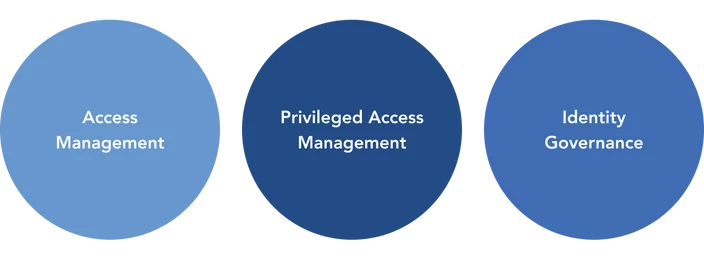

Nearly every book or article you are likely to encounter will provide slightly different answers as to the scope and composition of Identity and Access Management (IAM). Why does the information differ to such a degree? Well, IAM is different things to different people and is inherently broad and loosely defined. Front-line technical administrators are likely thinking about IAM from the purview of managing user privileges or de-provisioning users. The Chief Information Officer (CIO) is likely looking at the bigger picture and considering compliance and data protection. So, what is IAM?
For those that aren’t inundated with technology principal day in and out. This article is meant as a high-level generalization of the concepts and frameworks within IAM and seeks to provide a primer for those interested in being a part of the conversation or a place to start for those looking it dive in deeper into the concept.
IAM at its core is a concept. Under the umbrella of the overarching concept are frameworks. Things can get confusing when starting a journey to understand IAM because not everyone describes or even views IAM in the same manner. Even the frameworks can have overlaps and often seemingly contradicting information or descriptions.
Computing systems continue growing in complexity and scope. Users and systems are being added to the overall IT ecosystem constantly. Although the landscape is expanding, the premise remains the same. Quintessentially, there are some entities (users and systems) needing access to some resources- email, file share, other entities, business logic, etc.
NIST boiled it down aptly: “ensure the right people and things have the right access to the right resources at the right time.” In a nutshell, that’s it. Keep in mind the simplicity of this core principle as we move forward. Now let’s move on to some of the key components which comprise IAM.
IAM Components
The overlaps continue when discussing IAM components and there really aren’t any hard and fast rules when it comes to the accepted components of IAM.
In a nutshell, IAM consists of three core components:
Access Management
Privileged Access Management
Identity Governance

Each can be further dissected in great detail and from many perspectives, but we will keep to the concepts.
Access Management (AM)
The goal of Access Management is to ensure intended access and only intended access. AM is primarily concerned with ensuring only the intended user or thing is being granted access, not necessarily what the user or thing can do. A user provides a username or other identifier and then must prove his or her identity to the system by completing a challenge. In the past, the challenge for users was most often presented in the form of typing in a shared secret: a password. Thankfully, we are moving into a more secure paradigm which is where AM technologies like NoPass™, other MFAs, and passwordless authenticators reside.
Privileged Access Management (PAM)
Privileged Access Management is how it sounds, managing privileged access. Access management with PAM being additional controls placed on more sensitive accounts or data.
Domain Admin account
Super User account
Root Account
System Accounts
Since these accounts have a higher degree of risk associated with them, they should be further protected with additional controls. Additionally, these accounts are, or should be, subject to a much greater degree of scrutiny with regard to monitoring. Essentially, PAM seeks to control the use of privileged accounts to mitigate the risk of the credentials being used inadvertently.
Identity Governance & Administration (IGA)
Identity Governance & Administration addresses a wide range of processes, concepts, and technologies. IGA is primarily focused on administration, and analytics, and gives organizations visibility and control over identities across various platforms. Whereas AM seeks to ensure the correct entity is accessing a system, IGA seeks to control and track what the entity is doing on the system. Good IGA practices are also a notable influence on regulatory compliance efforts.
So what is IAM? IAM is a framework whereby the core components work together to complete an overarching strategy for managing identities and access across an organization. AM controls access, PAM further controls privileged access and IGA monitors and controls what entities are doing.